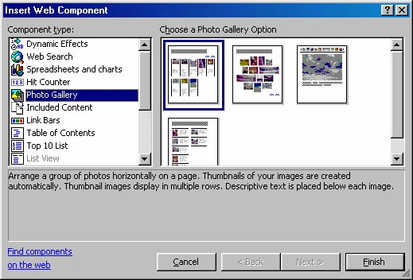
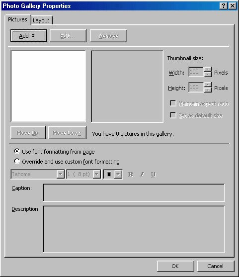
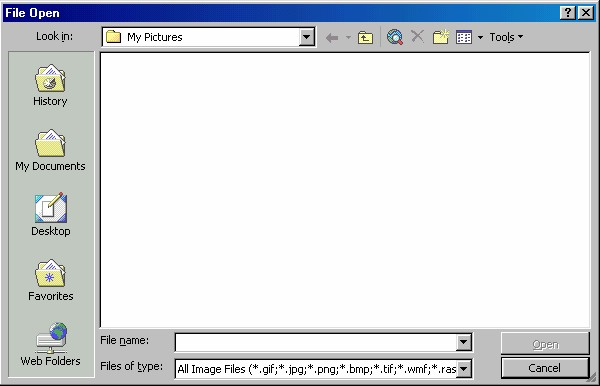
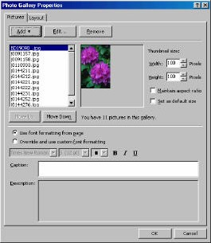
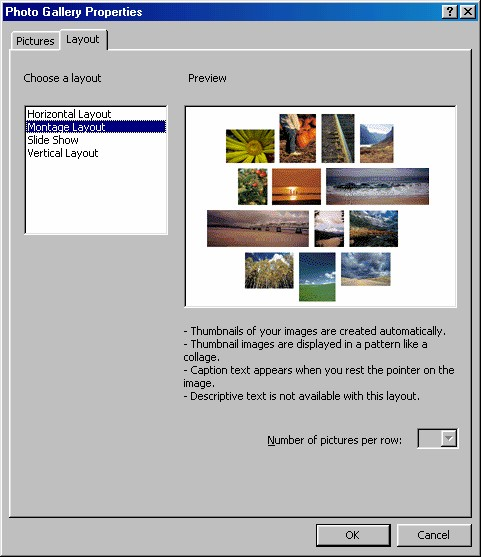
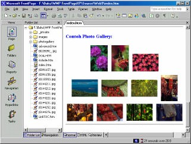
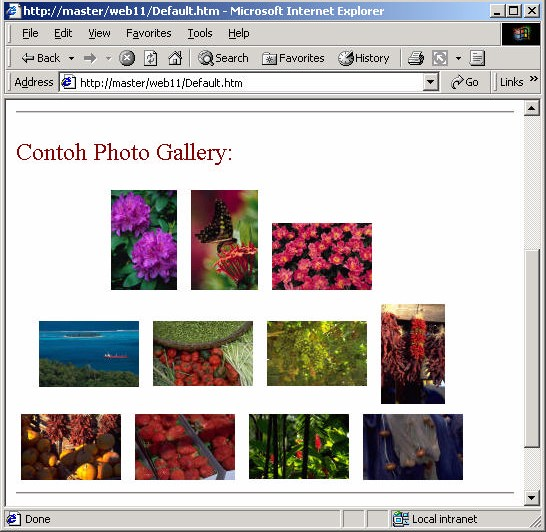

3 Photo Gallery
Photo Gallery adalah fasilitas baru yang ada di FrontPage XP. Photo Gallery
menyediakan sarana pembuatan halaman yang bisa digunakan untuk menampilkan
foto-foto dengan berbagai kompos isi yang menarik. Sebelum membuatnya, Anda
harus telah menyiapkan berbagai file foto di dalam situs Anda. Sebaiknya file -file
tersebut Anda simpan di dalam situs Anda, akan lebi baik pada folder khusus
misalnya images.
Mudah sekali cara pembuatan Photo Gallery, yaitu hanya perlu dua langkah seperti
berikut ini:
1. Salinlah file -file foto yang hendak ditampilkan pada folder images di dalam
situs Anda.
2. Kemudian buatlah sebuah halaman baru, lalu aktifkan Insert _ Web
Component. Muncul kotak dialog Insert Web Component.

Gambar 11.24 Pilihan Photo Gallery pada kotak dialog Insert Web Component
3. Pada bidang kiri kotak dialog tersebut klik pilihan Photo Gallery, lalu pada
bidang kanan klik salah satu komposisi yang Anda inginkan.
4. Klik tombol Finish, muncul kotak dialog Photo Gallery Properties, yang bisa
kita gunakan untuk pemilihan gambar yang akan kita gunakan. Gambar 11.25.

Gambar 11.25 Kotak dialog Photo Gallery Properties
5. Klik tombol Add, muncul dua pilihan Pictures from files dan Pictures from
scanners. Karena Anda telah memiliki berbagai file foto, pilihlah yang pertama
(Pictures from files). Namun masih tidak tertutup kemungkinan untuk
mengambil foto dari scanner, tujuan ini bisa Anda capai dengan klik pilihan
kedua (Pictures from scanners). Untuk klik pilihan pertama, akan muncul
kotak dialog File Open (Gambar 11.26) untuk memilih file gambar. Gunakan
kotak dialog tersebut untuk memilih gambar-gambar yang tersimpan di folder
images di dalam situs Anda.

Gambar 11.26 Kotak dialog File Open
6. Ulangi langkah nomor 5 di atas sampai seluruh gambar yang Anda inginkan
terpilih. Nama gambar akan ditampilkan dalam bentuk daftar di kotak dialog
Photo Gallery. Kalau Anda klik salah satunya, gambarnya akan ditampilkan di
bidang sebelah kanan. Jumlah gambar yang terpilih akan ditampilkan juga pada
kotak dialog ini. Pada contoh ini ada 11 gambar, maka muncul kalimat You
have 11 pictures in this gallery.

Gambar 11.27 Gambar terpilih muncul pada daftar
7. Untuk menghapus gambar yang tidak ingin disertakan, klik nama gambar lalu
klik tombol Remove.
8. Tombol Edit…, akan membuka gambar yang terpilih di program pengedit
gambar yang telah Anda tunjuk, misalnya Adobe Photoshop.
9. Urutan gambar bisa Anda atur dengan tombol Move up (menaikkan) dan Move
down (menurunkan). Caranya, klik nama gambar lalu klik salah satu tombol
beberapa kali sampai lokasi yang Anda inginkan tercapai, misalnya berada di
bawah gambar nomor 5 atau di atas gambar nomor 10.
10. Gambar yang akan ditampilkan pada komposisi halaman sebenarnya bukan
gambar dengan ukuran sebenarnya, namun hanya berupa thumbnail, yaitu
gambar dengan ukran lebih kecil. Kalau pengunjung situs Anda meng-klik salah
satu thumbnail pada komposisi tersebut, maka akan ditampilkan gambar dengan
ukuran aslinya yang lebih besar. Anda bisa mengatur ukuran thumbnail untuk
masing-masing gambar. Caranya, klik nama gambar lalu pada Thumbnail size ,
tentukan ukuran lebar (Width) dan tinggi (Height) dengan klik tombol spin di
sebelahnya. Klik tombol ke atas akan menaikkan ukuran dan sebaliknya. Satuan
ukuran yang digunakan aadalah pixel. Selanjutnya Anda bisa membuat ukuran
thumbnail dengan perbandingan lebar X tinggi sesuai dengan perbadingan
gambar aslinya, yaitu dengan mengaktifkan kotak cek Maintain aspect ratio.
Kalau Anda menyukai perbandingan tertentu dan ingin menerapkan ukran
favorit ini ke seluruh gambar, klik saja kotak cek Set as default size .
11. Meskipun Anda telah menentukan jenis komposisi pada kotak dialog Web
Component (Gambar 11.24) yang kini telah tertutup, Anda masih bisa memilih
komposisi dengan kotak dialog Photo Gallery Properties. Yaitu klik tab
Layout, muncul pilihan komposisi seperti Gambar 11.28.
12. Pada bidang kiri (Choose a layout), pilihlah komposisi lain. Hasil sementara
pilihan Anda akan ditampilkan pada bidang kanan (Preview).
13. Kalau seluruh pengaturan yang Anda inginkan sudah tercapai, Anda bisa klik
tombol OK. Maka hasilnya akan seperti Gambar 11.29.

Gambar 11.28 Pilihan komposisi

Gambar 11.29 Contoh pemasangan photo gallery
Kalau Anda jalankan pada browser, tampilan akan seperti Gambar 11.30.

Gambar 11.30 Tampilan Photo Gallery
Copyright © Herlan Lesmana
Created with the Freeware Edition of HelpNDoc: Easy CHM and documentation editor